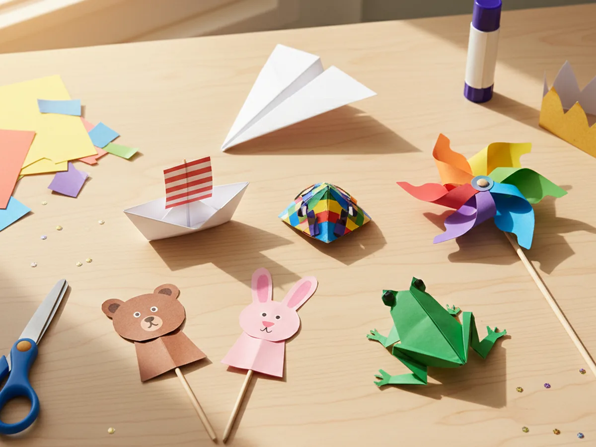
There is something wonderful about a toy your child made with their own two hands. These paper toys craft ideas are simple, satisfying, and surprisingly fun to play with once they are finished. Most of them only need a sheet of paper and a few basic supplies you probably already have at home, which makes them perfect for a rainy afternoon, a quiet weekend morning, or a small moment of calm between bigger activities. 🎨
Each paper toys craft on this list was chosen because it ends with something kids actually want to keep, play with, and show off. Whether your child loves things that fly, spin, fold, snap, or wobble, you will find at least a few ideas here that will light them up. They are all beginner friendly, low mess, and easy enough that you can sit down together and just enjoy the process.
What You'll Need
These broad supplies will get you through nearly every paper toy craft on this list, so you can dive into any idea your child picks without running around looking for missing materials. ✂️
- Crayola Construction Paper (240 Sheets, 12 Colors), a generous assortment that covers every color you could need for any paper toy.
- Astrobrights Colored Cardstock (Primary Assortment), heavier weight for toys that need to stand up, hold a shape, or take a little play wear.
- Fiskars 5 Inch Pointed-Tip Kids Scissors, the gold standard for little hands learning to cut straight lines and curves.
- Elmer's Disappearing Purple School Glue Sticks (30 Count), the purple goes on bright and dries clear, perfect for kids who like to see exactly where they glued.
- Crayola Broad Line Markers (10 Classic Colors), for decorating, drawing faces, and adding bright details that make each toy feel personal.
- Self-Adhesive Googly Wiggle Eyes (Assorted Sizes), the instant secret to turning any paper shape into a goofy little character.
- Juvale Mini Brass Brad Paper Fasteners (500 Pack), the magic piece that lets spinners, pinwheels, and moving toys actually move.
- Scotch Magic Tape (3 Rolls), invisible tape that holds paper toys together without looking messy.
- Artlicious Wooden Craft Sticks (1000 Pack), useful as handles for paper puppets, wands, and any toy that needs something to hold.
- Pencil and ruler, helpful for tracing lines before folding or cutting.
20 Paper Toys Craft Ideas to Make and Play With
1. Classic Paper Airplane
This is the paper toys craft that started it all. Fold a sheet of plain or colored paper into a classic dart shape, then test it across the living room and watch your child's face the first time it glides. You can keep it simple with one design, or make a whole fleet in different folds and see which one flies the farthest. It is a sweet way to spend an hour together and ends with a toy that is honestly hours of fun.
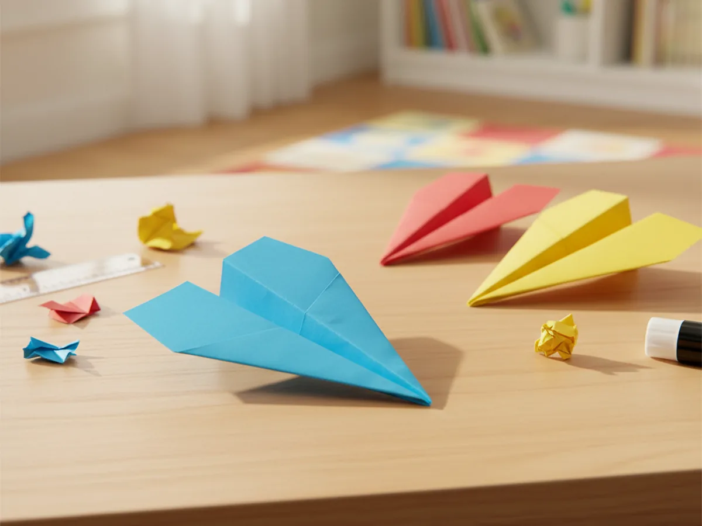
2. Folded Paper Boat
A folded paper boat is one of those simple paper toys that feels almost magical when it actually floats. Use a regular sheet of paper and follow the classic origami folds to create a little boat with a triangular sail shape on top. Once it is folded, fill the kitchen sink with water and let your child sail their fleet. Older kids love decorating the sail with markers before the boat hits the water.
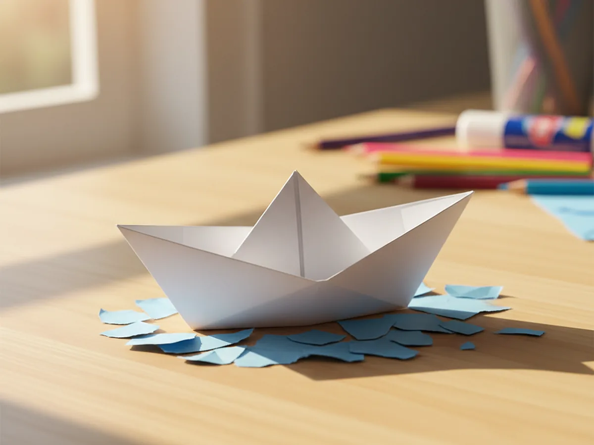
3. Paper Fortune Teller
Also known as a cootie catcher, this classic paper toy is a folded square that opens and closes between your fingers to reveal silly fortunes hidden inside. Write playful messages or color codes under each flap, then take turns asking questions and lifting the answers. It is one of those paper toys craft ideas that gets passed around at school for years, and your child will love teaching it to friends.
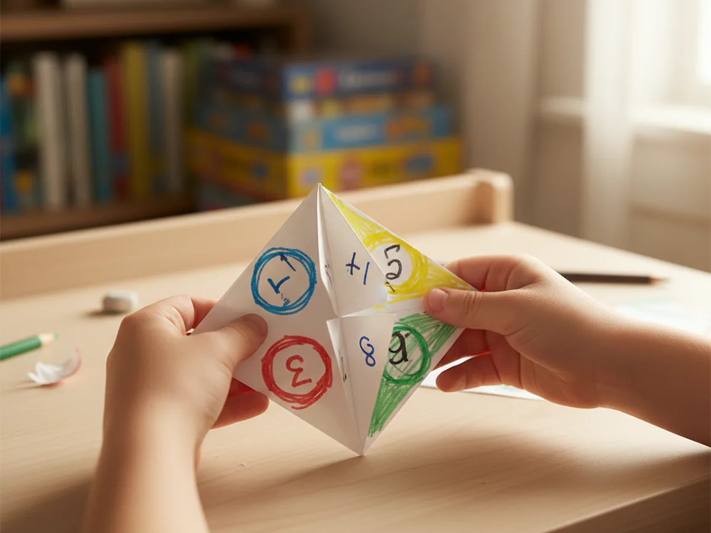
4. Paper Finger Puppets
Cut small paper rectangles, roll them around your child's fingers to size them, then tape the seam to make little finger tubes. Decorate each one as an animal, monster, or person with markers, googly eyes, and tiny paper ears or noses. Once you have four or five characters, you have a whole puppet show ready to go. This is a wonderful paper toys craft for sparking imaginative play, and the puppets last for ages.
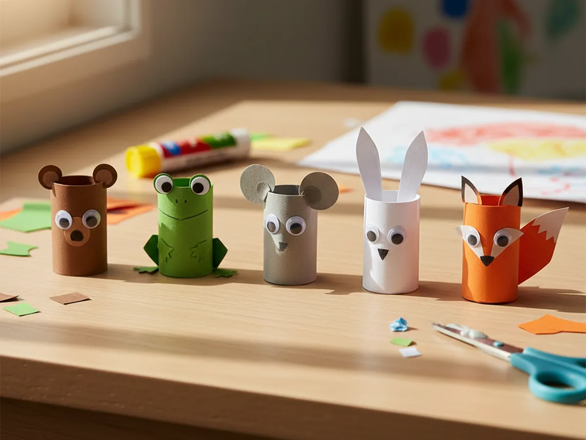
5. Spinning Paper Top
Cut a circle of cardstock about the size of a coaster, decorate it with colorful patterns, then push a brad fastener through the very center to act as the spinning point. Give it a flick on a smooth surface and watch the colors blur together as it spins. Kids love this paper toy craft because the patterns they draw look completely different the moment it starts spinning.
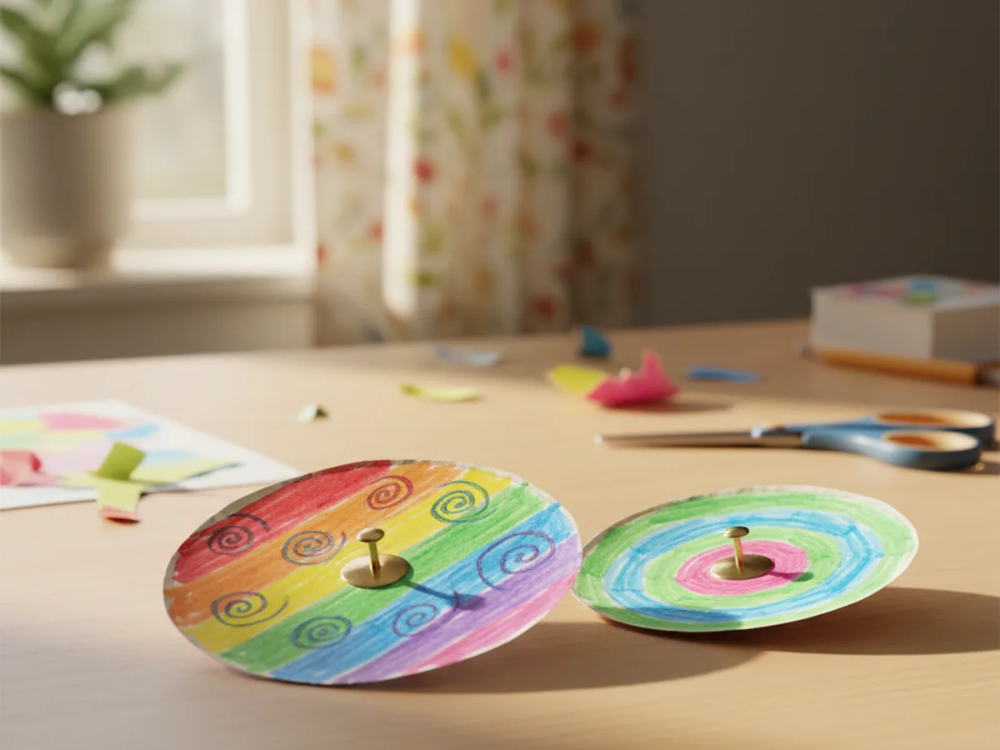
6. Paper Whirligig Helicopter
Cut a long paper rectangle, snip one end into two flap shapes that fold outward like helicopter blades, and weight the opposite end with a small paper clip. Drop it from a chair or the top of the stairs and watch it spin all the way down. This is one of those paper toys craft ideas that surprises kids every time because the design is so simple and the result so satisfying.
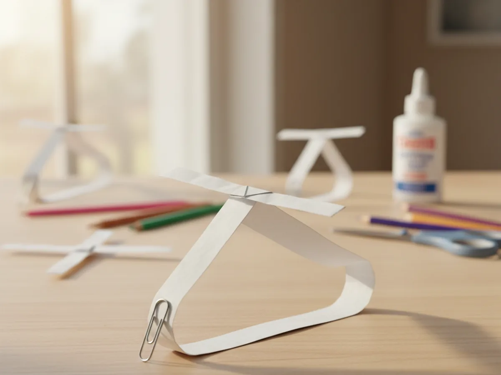
7. Origami Jumping Frog
Fold a small rectangle of green paper into an origami frog with a hinged back that snaps forward when you press its rear. Set it on the table, press the back, and watch it leap. Add two tiny googly eyes for personality. This is one of the most beloved paper toys craft ideas because the toy actually moves on its own once it is finished, and frog races are an instant living room sport.
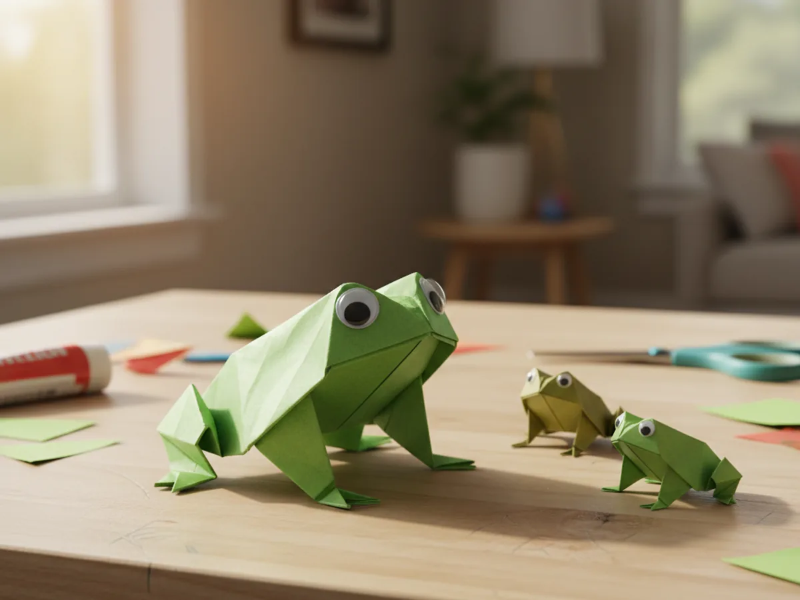
8. Paper Pinwheel
Cut a square of decorated paper diagonally from each corner toward the center, fold every other point inward to meet at the middle, then secure with a brad through a wooden stick. Take it outside or hold it near a small fan and watch it spin in the breeze. A paper pinwheel is one of the most satisfying paper toys because it actually catches the wind and plays back, just like a real outdoor toy. 🌸
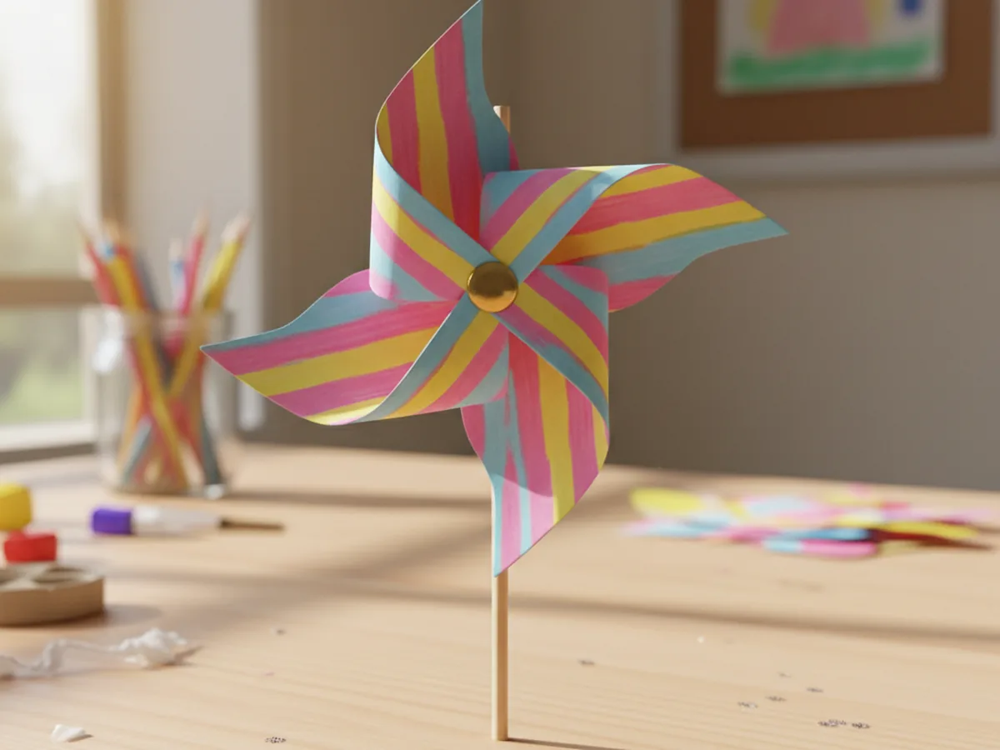
9. Paper Roll Binoculars
Tape two empty toilet paper rolls together side by side, then decorate the outside with construction paper, washi tape, or markers. Punch a small hole near the top of each tube and thread a piece of yarn through as a neck strap. Suddenly your child has binoculars for a whole afternoon of pretend safaris in the backyard. This paper toy craft doubles as a costume piece for dress up play.
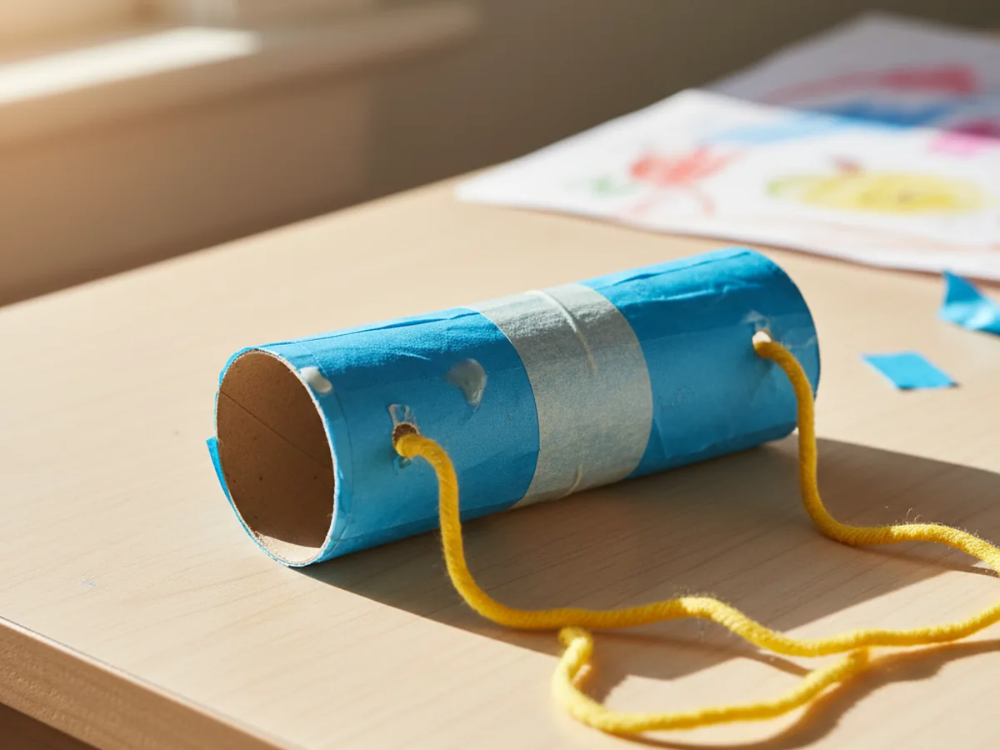
10. Wearable Paper Crown
Cut a long strip of paper, snip triangular zig zag points along the top edge to form the crown points, then tape the ends together to fit your child's head. Decorate it with markers, glued on paper jewels, or foam stickers before the official coronation. This is one of the simplest paper toys craft ideas, and it doubles as a prop for hours of imaginative royal play.
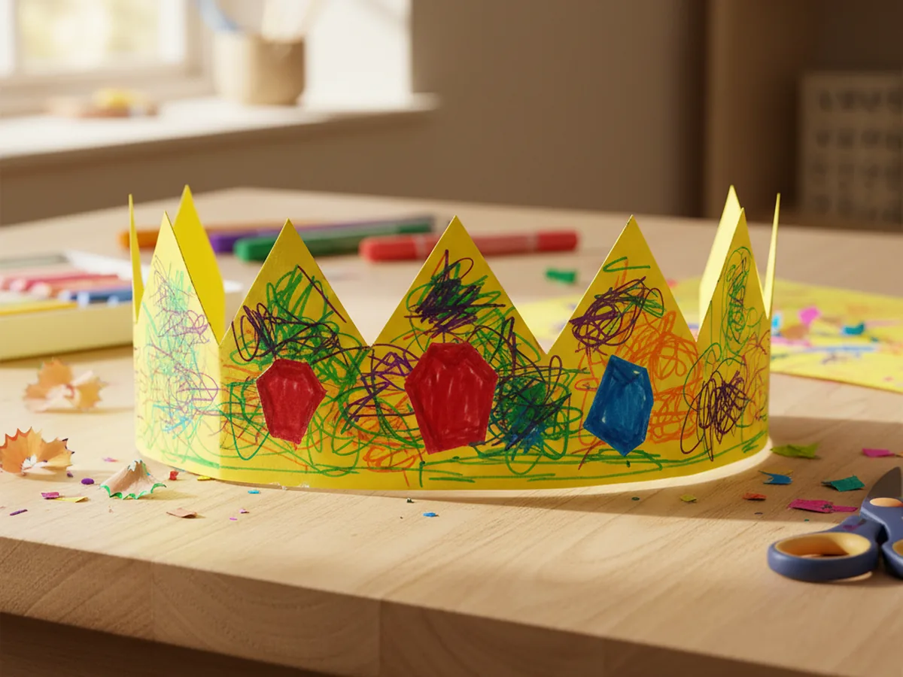
11. Rolled Paper Sword
Roll a sheet of cardstock tightly into a sturdy tube for the blade, tape it closed, then add a smaller cardstock hilt across the base for the handle. Decorate it with silver markers or aluminum foil for a shiny finished look. This paper toy craft is a favorite for backyard pirate adventures and never feels too rough since it is just paper. Make two so siblings can play together.
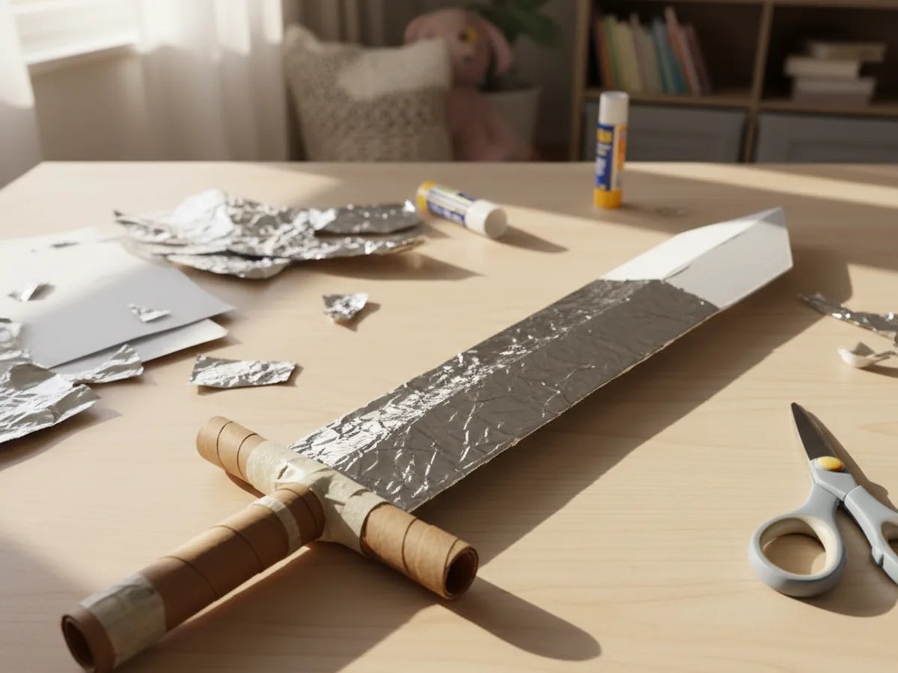
12. Paper Animal Mask
Cut an oval or round face shape from cardstock, snip out two eye holes, then add cardstock ears, a snout, and details for whatever animal your child picks. Tape a wooden craft stick to one side as a handle so the mask can be held up to the face for play. Lions, foxes, bunnies, and pandas are all easy first masks for any paper toys craft session.
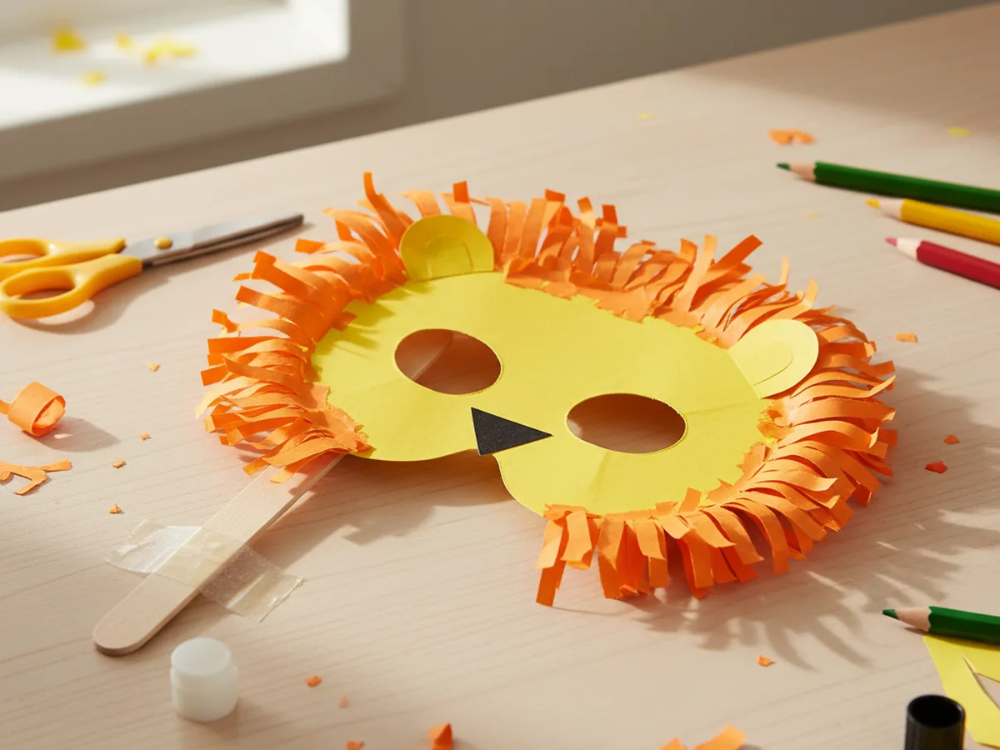
13. Paper Roll Telescope
Take a single sturdy paper tube, wrap the outside in dark blue or black paper, and add small star or moon stickers down the sides to give it a real explorer feel. A small paper ring at one end finishes the eyepiece. This paper toy craft is great for pretend pirate ships, astronaut adventures, and backyard star gazing on a warm evening.
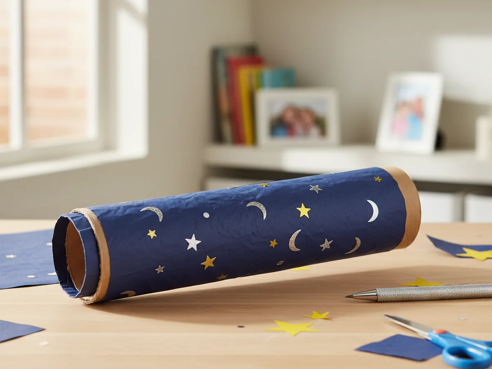
14. Paper Rocket Launcher
Roll a small rectangle of paper into a tube around a pencil, slide it off, and cap one end closed with tape. Add triangular cardstock fins and a pointed nose cone. To launch, slide the rocket back onto a drinking straw and blow hard on the other end to send it flying. This is one of the most exciting paper toys craft ideas in the list, because the launch is honestly thrilling for kids and adults.
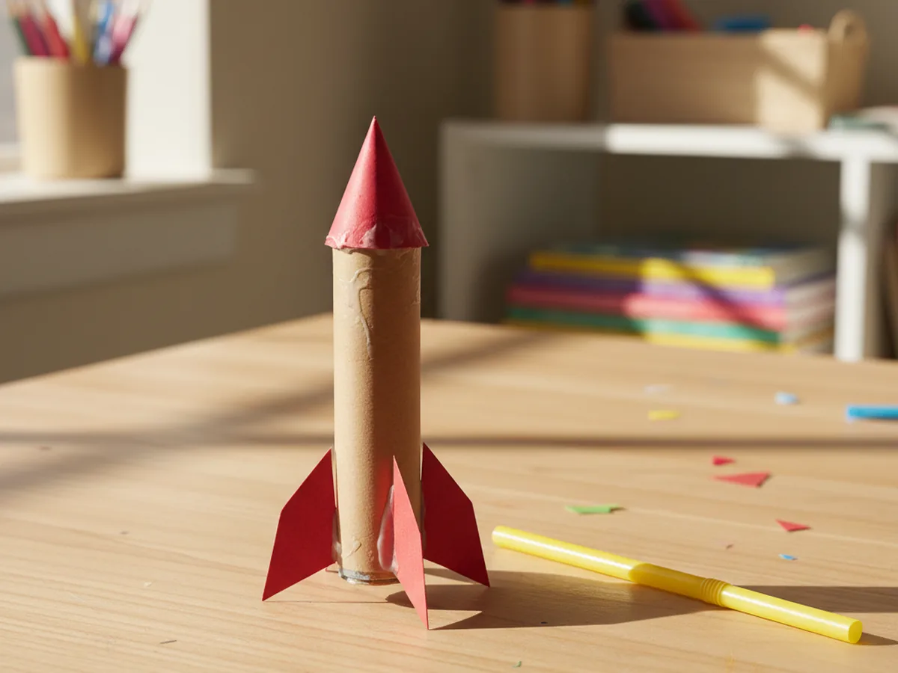
15. Paper Dress Up Doll
Draw a simple person shape on cardstock, cut it out, then create paper outfits with little fold over tabs that hook onto the doll's shoulders. Color the outfits in different styles and let your child mix and match. A whole shoebox of paper clothes is a treasure for hours of quiet pretend play, and it is one of the most peaceful paper toys craft ideas in this collection.
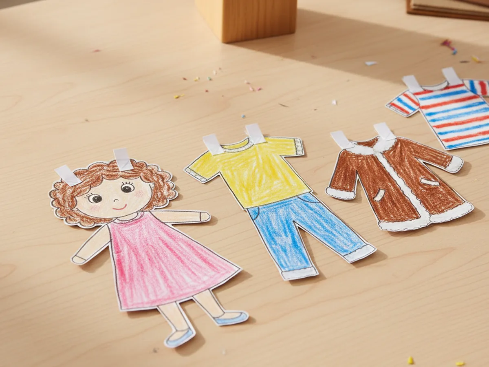
16. Flat Paper Race Car
Cut a simple race car silhouette from cardstock, decorate it with markers, racing numbers, and tiny black paper wheels glued onto the bottom. Make several cars in different colors so siblings or friends can race them across the table or down a tilted board. This paper toy craft is sweet because kids love making personalized cars and naming each one before the big race begins.
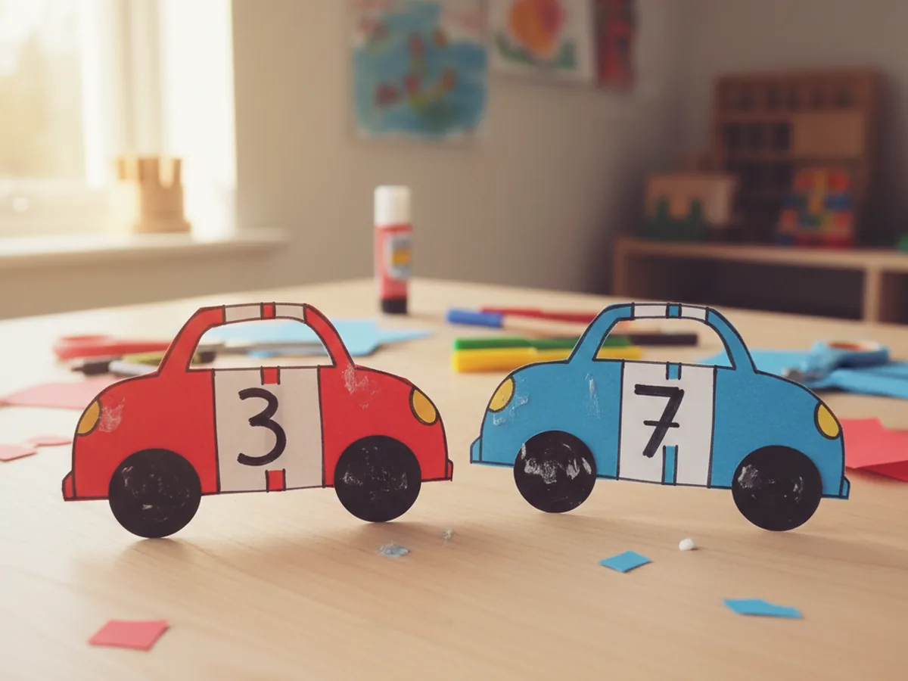
17. Paper Glider
Unlike a classic paper airplane, a glider uses a flatter wing design that allows it to float gently rather than dart. Cut a long thin rectangle for the wings and a small fuselage shape, then tape them together at a slight upward angle. Send it from one side of the room and watch it sail. Glider tests outdoors on a calm day are one of the loveliest paper toys craft activities.
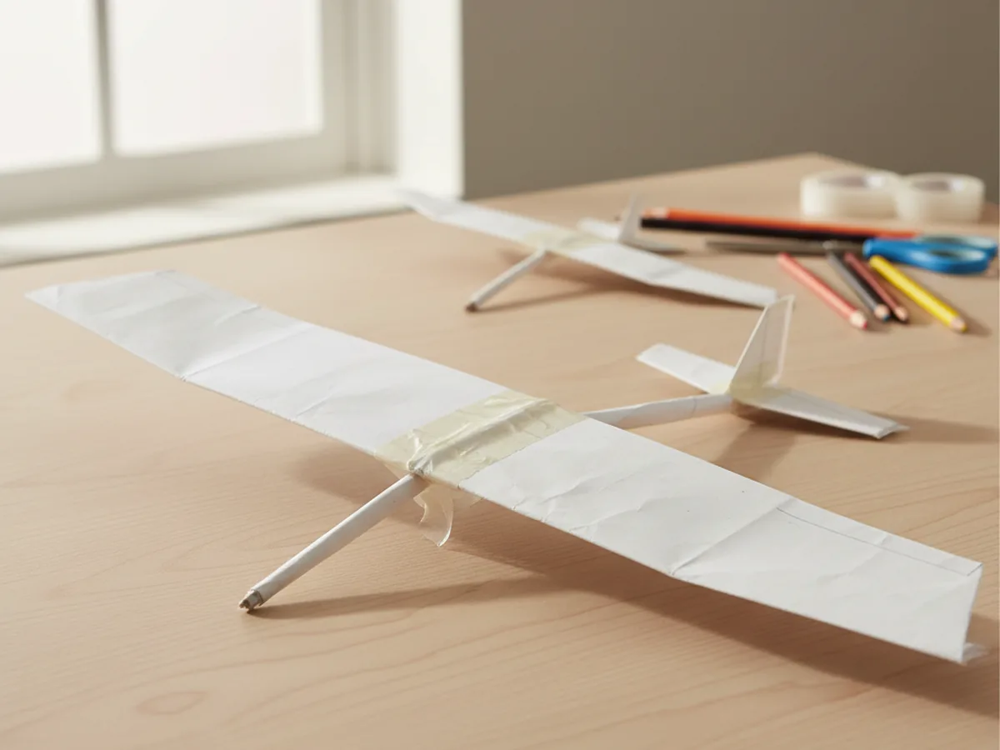
18. Spiral Paper Snake
Draw a wide spiral on a paper circle and cut along the line so the snake unwinds when you lift the center. Add a small triangular head with a tongue and two googly eyes at the outer end. Hold it up by the head and watch the spiral dance and bounce. This silly little paper toy craft is a perfect quick project when you have ten minutes and just want a few giggles.
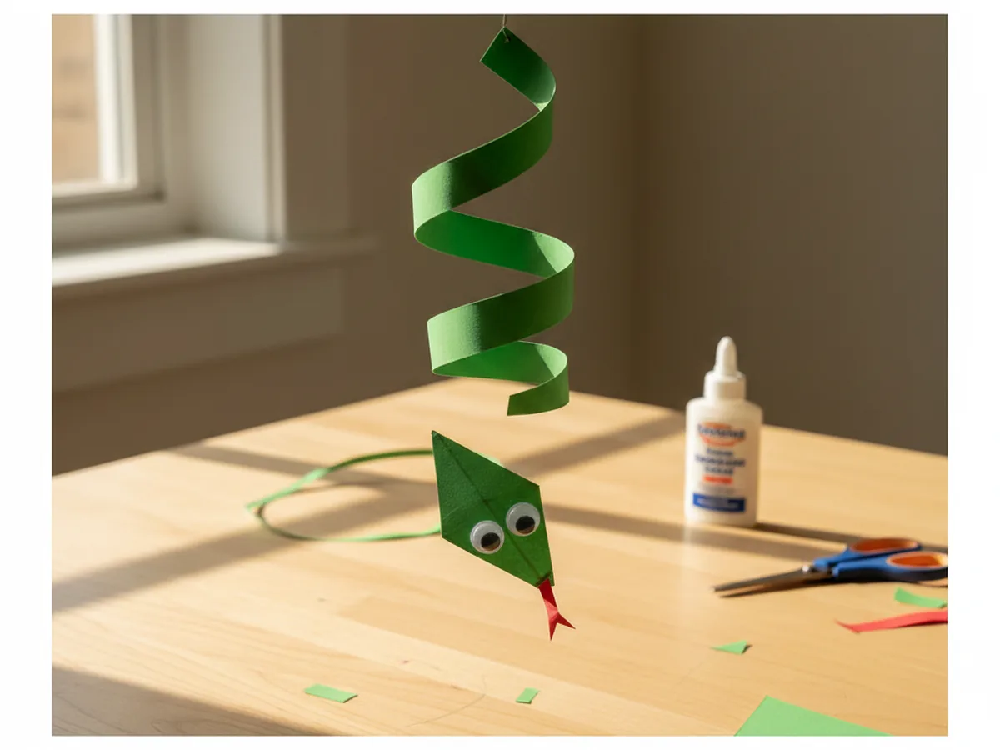
19. Paper Kazoo
Roll a small rectangle of paper into a tube about the size of a marker, tape it closed, then cover one end with wax paper or thin parchment held in place with a rubber band. Cut a small hole near the covered end. When your child hums into the open end, the kazoo buzzes. This is one of the funniest paper toys craft ideas, and it usually leads to a whole impromptu paper kazoo band.
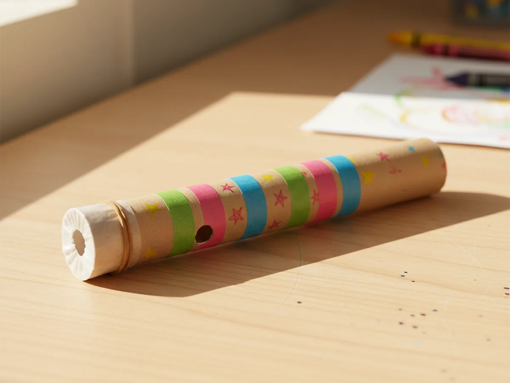
20. Paper Castle Playset
This is the showstopper. Use cardstock to build a small castle by folding rectangles into tower shapes, adding cardboard or cardstock walls between them, and topping the towers with cone roofs. Cut tiny paper flags, drawbridges, and windows for detail. Pair it with paper finger puppets from idea four for an entire scene. It is one of the most ambitious paper toys craft ideas, but it makes a beautiful keepsake too.
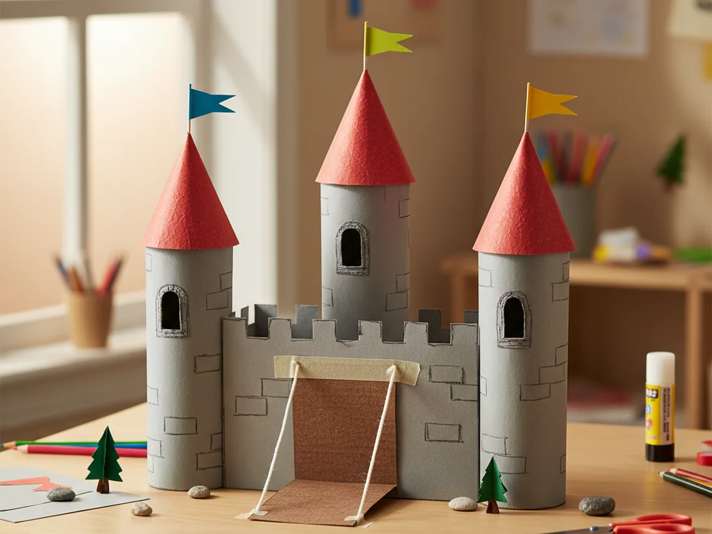
Final Thoughts
There is a special pride in watching a child play with a toy they made themselves, knowing the only thing on the table when you started was a stack of paper. These paper toys craft ideas are simple enough that the making part stays fun, and they all end with something kids actually want to keep using afterward. That second life as a real toy is what makes paper toys feel different from regular crafts. 💛
Pick whichever idea suits your afternoon best, gather a few sheets, and let your child take the lead on colors and decorations. You will both be surprised how much joy comes out of one small folded square of paper.
More Crafts You'll Love
If these paper toys made you smile, here are two more paper craft collections to try together.
Happy folding, cutting, and playing together.